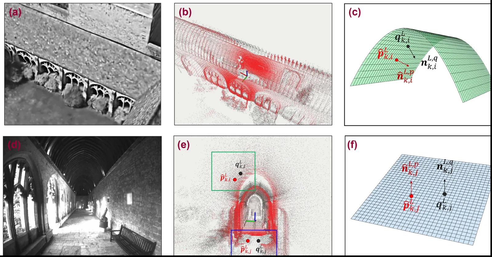

IEEE RA-L 2023 · Robot perception
Fast and Versatile Feature-Based LiDAR Odometry via Efficient Local Quadratic Surface Approximation
LiDAR odometry that aligns scan points to local quadratic surfaces instead of committing each point to a line or plane.
- Authors
- Seungwon Choi, Hee Won Chae, Yunsuk Jeung, Seokjoon Kim, Kyusung Cho, Tae Wan Kim
- Venue
- IEEE Robotics and Automation Letters, 8(2), 640–647, 2023
Summary

Feature-based LiDAR odometry usually classifies each point as an edge or a plane and aligns it to a matching line or plane in the map, so it breaks down when the feature class does not match the map’s actual local geometry. This work instead approximates the local geometry around each point as a quadratic surface and aligns scan features with point-to-surface alignment, which removes that dependence on a correct feature class. A symmetric objective function avoids the costly evaluation of surface parameters, keeping the method fast. Experiments on the KITTI and Newer College datasets show that it outperforms other feature-based methods, especially in environments where feature classification is ambiguous, and that it works across LiDAR sensors with different scan densities, including relatively sparse ones.